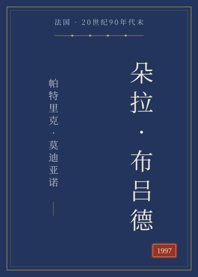
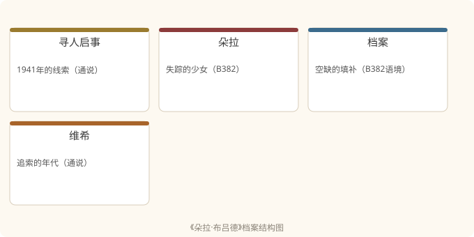

朵拉·布吕德
一、基本信息
| 作者 | 帕特里克·莫迪亚诺 |
|---|---|
| 成书/出版 | 1997年（Britannica B382：Dora Bruder (1997; The Search Warrant)） Patrick Modiano — Encyclopaedia Britannica（百科全书） |
| 国别/地区 | 法国 |
| 时代 | 现当代 · 20世纪90年代末 |
| 体裁 | 纪实文学（档案叙事） |
| 语言 | 法语 |

《朵拉·布吕德》档案结构图（主题·结构图）
二、创作背景
Britannica（B382）：Dora Bruder——'An effort to reconstruct the life of a missing Jewish girl'（重构一位失踪犹太少女的一生）。
Britannica（B382）：莫迪亚诺——'the art of memory with which he has evoked the most ungraspable human destinies'（诺奖授奖词）。
题材（通说待核）：从旧报纸寻人启事出发——档案、地址与'维希'的空缺。
三、内容脉络
（通说待核）1941年《巴黎晨报》寻人启事：15岁的朵拉离家。
（通说待核）档案的空缺与作者的填补。
四、主要人物表
| 人物 | 身份 | 说明 |
|---|---|---|
| 朵拉·布吕德 | 失踪少女 | （B382 书名人物） |
| 欧内斯特·布吕德 | 父亲 | （通说待核） |
五、主题与艺术特点
- 档案与记忆的伦理（B382：reconstruct the life）。
- '最难把握的人类命运'（B382 诺奖引语）。
- 维希法国的追索（通说待核）。
六、影响与评论
- Britannica：'An effort to reconstruct the life of a missing Jewish girl'（B382）。
Patrick Modiano — Encyclopaedia Britannica（百科全书） - Britannica：2014诺奖授奖词（B382）。
Patrick Modiano — Encyclopaedia Britannica（百科全书）
七、阅读建议
难点
- 档案叙事的空缺美学。
- 维希法国史。
- 《朵拉·布吕德》中译名（《失踪女子》）待核。
- 法文原版。
莫迪亚诺非虚构篇；与《暗铺街》对读。
八、待核实
- 朵拉档案细节核对（通说）。
- 1997年出版细节待核。
- 英译名 The Search Warrant（B382）核对。